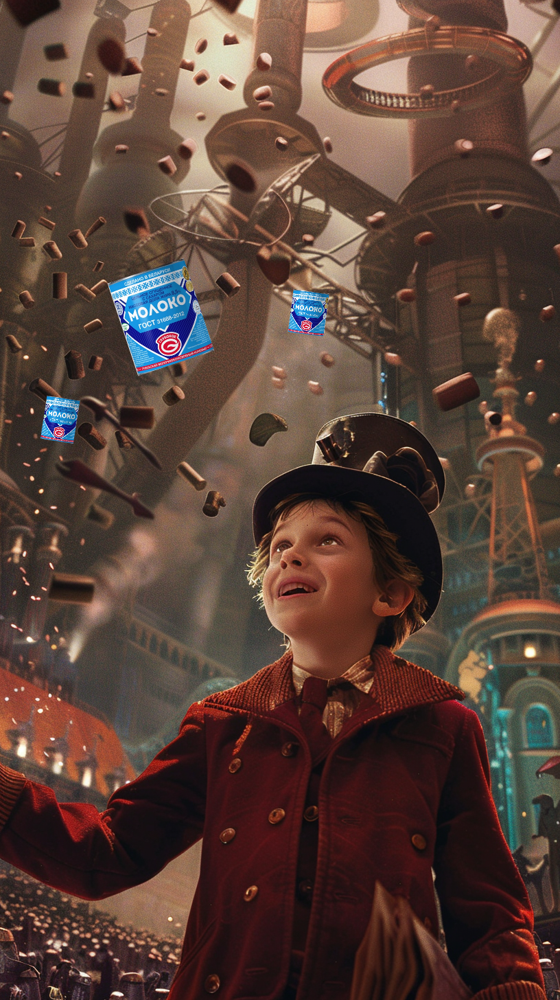

Фактура и вкус Поозерья
В Глубокое из Минска лучше всего добираться автомобилем или автобусом, это займет от 2:30 до 3:00 часов и обойдется вам ~25-30 BYN. Чтобы успеть к завтраку, мы стартуем в 7 часов утра, благо, на улице весна и светает рано. Наш путь пролегает по живописным местам Логойщины, через Бегомль и Докшицы. Уже за Логойском мы покидаем Центральную Беларусь и перемещаемся в Поозерье - удивительный край, оставленный нам в наследство Большим ледником. Тысячи озер, больших и маленьких, не только радуют глаз, но еще и являются важнейшим элементом экосистемы, дающим дом и пищу многим видам животных.
Насладившись весенними пейзажами, мы прибываем в Глубокое, первую цель нашего путешествия. Нас уже ждут: на улице Ленина, в "Пекаренке", заварен ароматный кофе и готова свежая выпечка. Сытный киш или воздушный круассан придадут вам сил, я же был не в силах выбрать и попробовал оба. Кофе/чай/горячий шоколад обойдутся вам в ~2.5-4 BYN, выпечка ~2-5 BYN. Погода отличная, мы берем кофе навынос, поворачиваем за угол и оказываемся на центральной площади с видом на церковь Святой Троицы, памятник архитектуры в стиле барокко, построенную в 1764—1782 годах. Чудесный вид! Величие и легкость, колокольный звон и аромат выпечки делают это утро незабываемым.
Там же мы видим аллею знаменитых земляков, среди которых есть и Язэп Дроздович, художник и фольклорист, много путешествовавший по Беларуси, который любовью к своей стране проникся именно на малой родине, в Глубокском районе. На Глубоччине родился Игнат Буйницкий, основатель белорусского театра, Вацллав Ластовский, премьер-министр БНР и автор учебников по истории. Здесь жили выдающийся авиаконструктор Павел Сухой, автор романа «Знахарь» Тадеуш Доленга-Мостович, возрожденец иврита Бен-Иегуда, поэт Алесь Дубрович. Эти и другие имена знаменитых людей края увековечены на Аллее, которая не так давно появилась в Глубоком.
На противоположной стороне площади раскинулся бывший монастырь кармелитов и собор Пресвятой Богородицы, первый памятник и наиболее полное выражение школы виленского барокко на территории Республики Беларусь, в котором отразились важные этапы развития художественных принципов белорусского барокко.
Чарли и… Глубокский МКК Прикоснувшись к истории, мы отправляемся на Глубокский МКК - главную современную визитную карточку города, основной донор хорошего настроения нашей страны! Вместе с ведущим инженером консервного цеха мы пройдем все основные стадии приготовления любимого лакомства, поговорим об извечной конкуренции с рогачевской сгущенкой, расширении ассортимента, узнаем тайну секретного ингредиента и получим возможность продегустировать тягучую сладость.